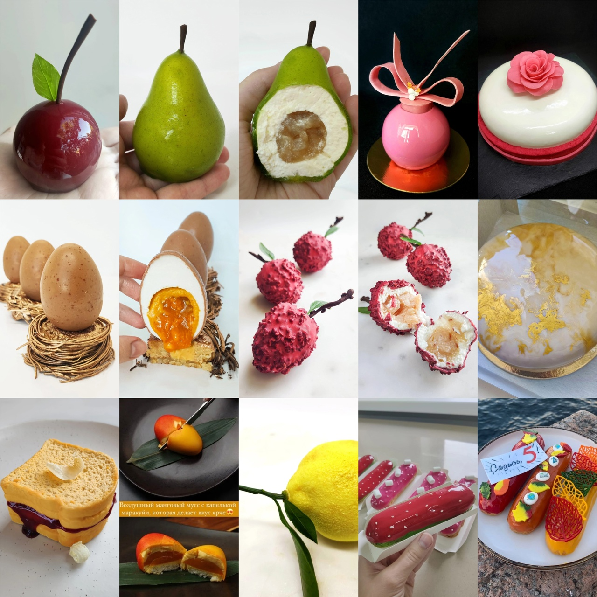

Обожаю вопрос "Чем ты занимаешься?", потому что ответ получается довольно забавным 😅
Лет 10 я работала моделью, не только на съемках, но и на различных выставках и форумах. Паралелльно - репетитором по английскому . По образованию я лингвист-переводчик
Потом я дополнительно закончила школу гидов-переводчиков, отучилась во всех основных музеях Спб и сдала в них экзамены на право ведения экскурсий для иностранцев. 5 лет я работала гидом с небольшими группами туристов, в-основном США и Европы. Эта работа мне очень нравилась и я с удовольствием продолжала бы развитие в этой сфере, если бы не случился ковид. Туристов почти не стало, надежды на восстановление потока до доковидного уровня в ближайшие лет 5-10 уже не осталось, поэтому пришлось менять профессию.
У меня было хобби- я делала муссовые десерты. Вообще я делала это для себя, но потом знакомые стали просить приготовить и им.

Поэтому, оставшись без работы, я устроилась в ресторан шеф-кондитером. Год я проработала там и абсолютно выгорела..У меня было много идей для десертов, но я больше никак не могу собраться и начать их воплощать..
Кроме того, у меня начались проблемы со спиной и я решила менять работу на менее физически тяжелую. Некоторое время я поработала в агенстве дизайна интерьера , занимаясь работой с подрядчиками и комплектацией объектов от напольных покрытий до декоративных подушек.
Я пробовала изучать Java несколько месяцев, но потом забросила. В этот раз решила попробовать JS
В свободное время я люблю ездить на природу с палаткой, плавать на сапе и иногда прыгаю с веревкой. Раньше часто ездила заграницу на рок-концерты. Люблю pink floyd, led zeppelin, alice cooper, bon jovi, guns'n roses, rammstein, godsmack, heilung и всякое такое 🤘 Еще я очень люблю собачек и у меня есть фокстерьер Одри